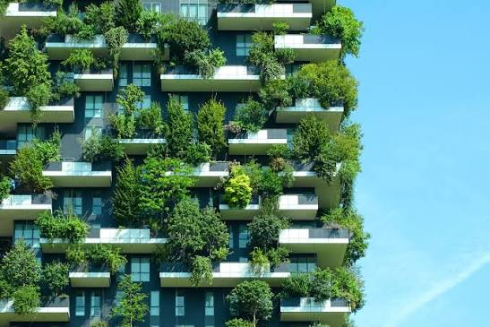

Projetos Sustentáveis e a transformação do meio ambiente

Projetos sustentáveis são iniciativas desenvolvidas com o objetivo de solucionar problemas ambientais, sociais e econômicos de maneira equilibrada. Esses projetos buscam utilizar os recursos naturais de forma responsável, reduzir impactos ambientais e melhorar a qualidade de vida das pessoas. Eles podem ser desenvolvidos por governos, empresas, escolas, comunidades e até mesmo por pequenos grupos que desejam contribuir para a preservação do planeta.
Com o crescimento das cidades e o aumento do consumo de recursos naturais, desenvolver projetos sustentáveis tornou-se cada vez mais importante. Ações como criação de áreas verdes, utilização de energias renováveis, reaproveitamento de materiais, tratamento de água e incentivo à reciclagem são exemplos de iniciativas que podem diminuir os impactos causados pelas atividades humanas.
A tecnologia também possui um papel importante na criação desses projetos. Sistemas inteligentes podem monitorar o consumo de água e energia, sensores podem identificar desperdícios e novas tecnologias podem transformar resíduos em materiais reutilizáveis. Além disso, fontes de energia renovável, como a solar e a eólica, permitem desenvolver projetos capazes de produzir energia causando menos impactos ambientais.
Projetos sustentáveis também podem transformar a realidade das comunidades. Hortas comunitárias, sistemas de captação de água da chuva, programas de coleta seletiva e projetos de educação ambiental são iniciativas que incentivam a participação da população. Dessa maneira, a sustentabilidade deixa de ser apenas uma preocupação ambiental e passa a fazer parte das decisões e ações realizadas diariamente pela sociedade.
A importância dos Projetos Sustentáveis
Os projetos sustentáveis são importantes porque ajudam a encontrar soluções para problemas que afetam diretamente o meio ambiente e a sociedade. Um projeto bem planejado pode diminuir o desperdício de recursos naturais, reduzir a quantidade de resíduos produzidos, preservar a biodiversidade e contribuir para a redução da poluição.
Além dos benefícios ambientais, essas iniciativas podem gerar benefícios econômicos e sociais. Projetos de energia renovável podem diminuir custos de energia a longo prazo, programas de reciclagem podem gerar oportunidades de trabalho e iniciativas de agricultura sustentável podem fortalecer a produção local de alimentos. Dessa forma, sustentabilidade significa buscar um desenvolvimento que consiga atender às necessidades atuais sem comprometer as possibilidades das futuras gerações.